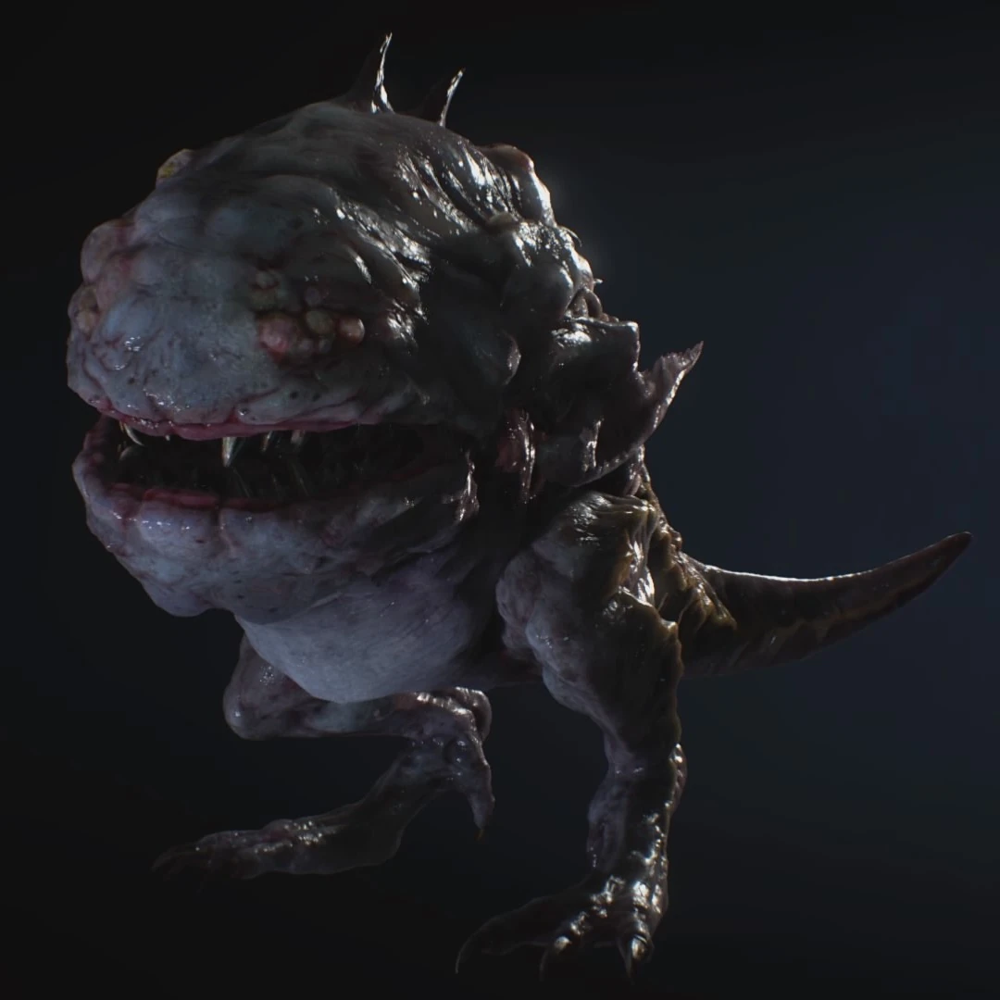
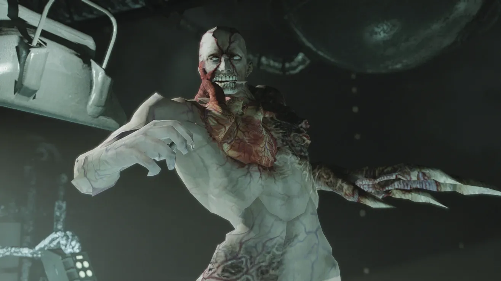
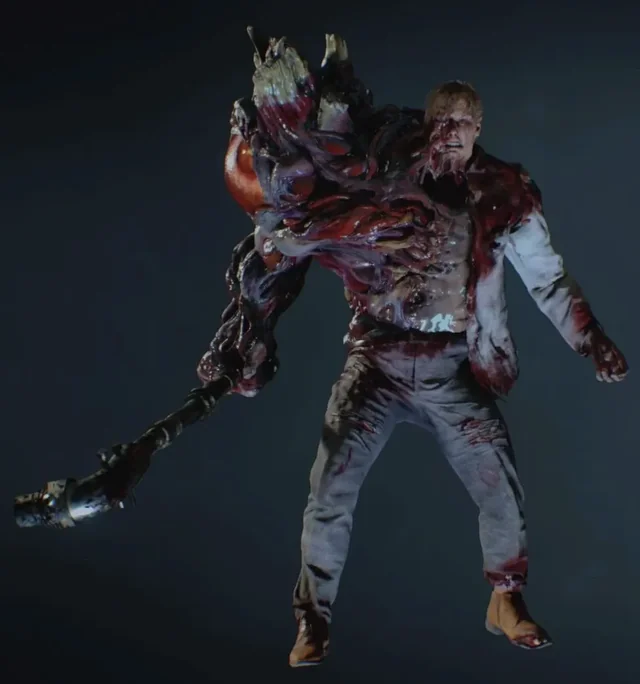
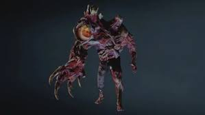
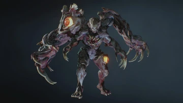
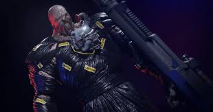
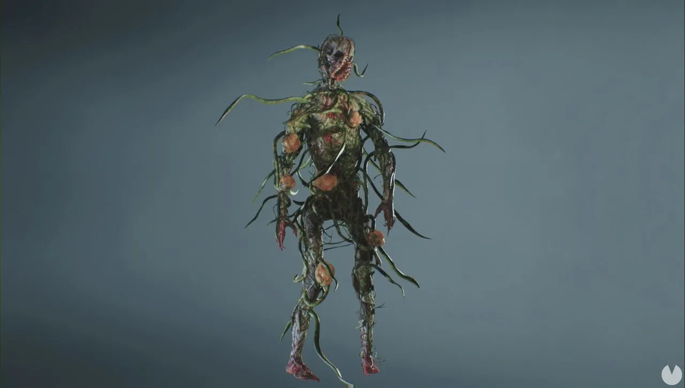
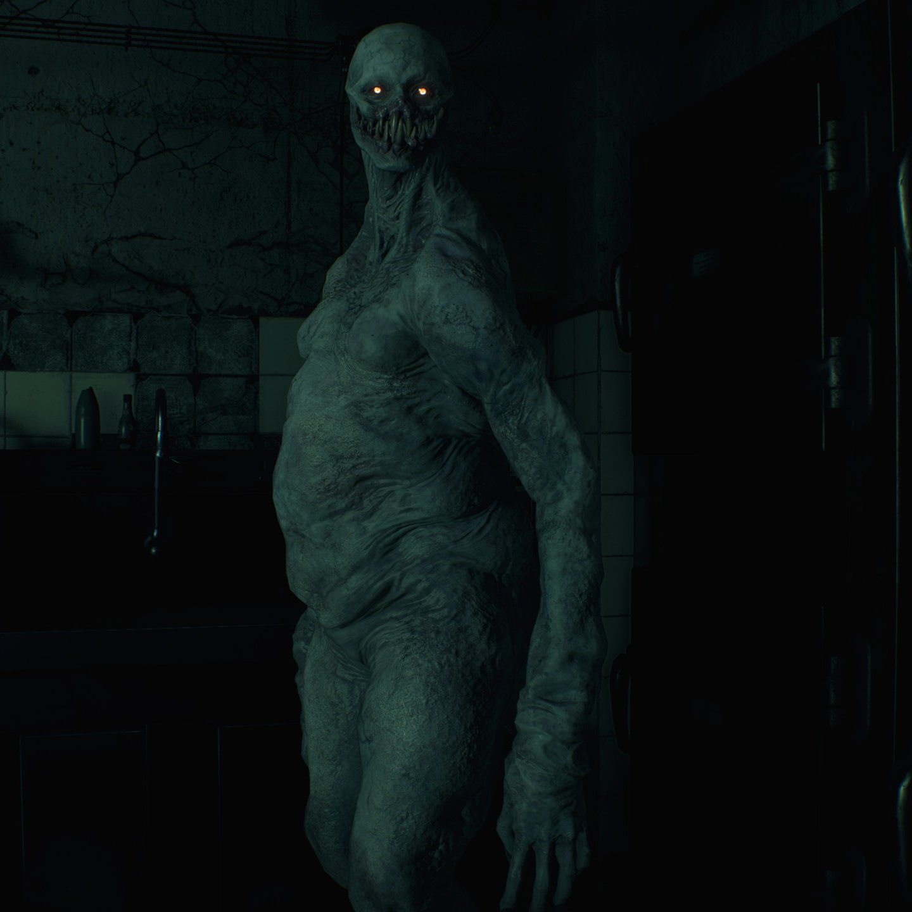
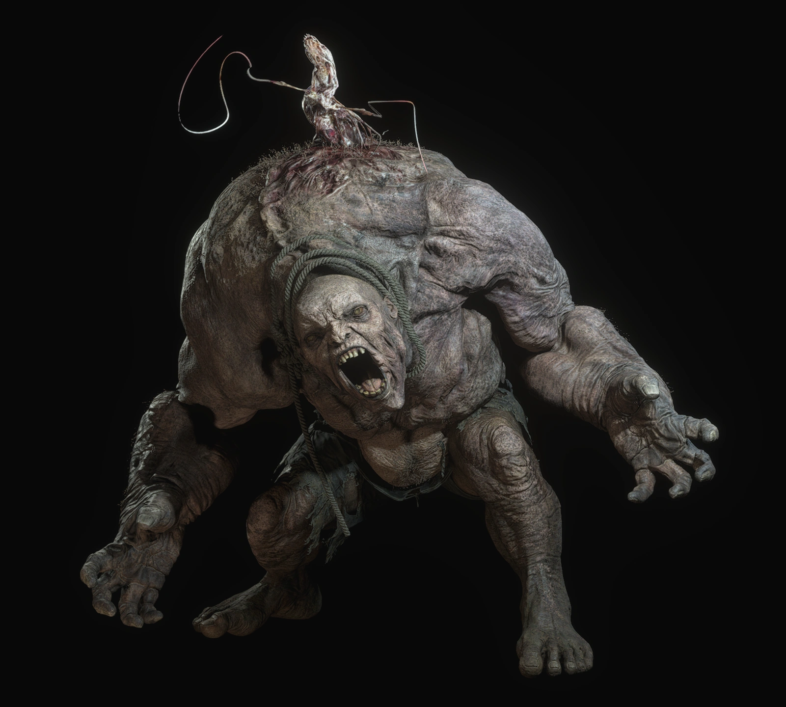
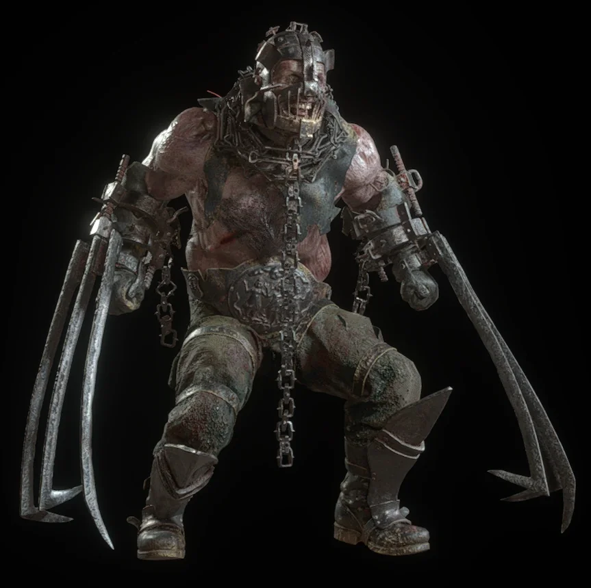

Catálogo Destacado de B.O.W.s (Criaturas)
Armas bioorgánicas de nuestra matriz Umbrella, categorizadas desde fallos genéticos hasta unidades de élite:
Zombies
Mutaciones accidentales del Virus-T en humanos; considerados
subproductos fallidos por la mesa directiva y no verdaderas armas
comerciales.
Debilidad: Destrucción
del tejido cerebral (tiros directos a la cabeza).

Cerberus (MA-39)
Perros entrenados tipo doberman infectados directamente con el Virus-T,
ampliamente utilizados por su gran agilidad y manadas feroces.
Debilidad: Baja resistencia física, vulnerables a
armas de dispersión como escopetas.

Hunters (Serie MA-120)
Repitilianos bipedales cruzados con ADN humano y Virus-T. Altamente
letales, con garras afiladas capaces de decapitar objetivos
blindados.
Debilidad: Munición ácida y
calibres altos (Magnum) detienen en seco su gruesa piel.

Hunter Gamma (γ)
B.O.W. anfibia desarrollada a partir de base humana y ADN de anfibio
fusionados con Virus-T. Letales y adaptados a entornos acuáticos, pueden devorar
presas enteras.
Debilidad: Munición
incendiaria o impactos directos a sus fauces hiper-expuestas.

Lickers (Mutación V-ACT)
Mutación irregular de un zombi que experimenta regeneración celular
agresiva tras falta de nutrición y exposición viral continua.
Debilidad: Totalmente ciegos (pueden ser evadidos
en silencio), altamente susceptibles al ácido.

Tyrants (Ej: T-103)
El pináculo real de la investigación genética de Umbrella.
Súper-soldados orgánicos imparables capaces de obedecer lineamientos tácticos
moderados.
Debilidad: Fuego
concentrado de armamento pesado y sus enormes corazones expuestos en mutación.



William Birkin (G)
Brillante científico creador del Virus-G. Tras inyectarse su propia
cepa, mutó en una criatura imparable y descontrolada que sufre constantes
evoluciones brutales.
Debilidad: Sus
debilidades son los gigantescos globos oculares naranjas que brotan aleatoriamente
en su biomasa.

Nemesis T-Type
Arma B.O.W. letal creada al implantar el parásito NE-α en un
Tyrant. Rastreador inteligente desplegado con la única de misión de cazar y ejecutar
sistemáticamente a S.T.A.R.S.
Debilidad: Armamento pesado militar, cañones
electromagnéticos (Railguns) y sus parásitos base.

Plantas-T
Excepcionales mutaciones botánicas causadas por el Virus-T. Desarrollan
colosales tamaños, agresividad hacia movimientos térmicos y letales neurotoxinas
defensivas.
Debilidad: Inmensamente
vulnerables al fuego y sueros de alteración química para plantas (V-JOLT).

Regenerador
Arma B.O.W. producto de inocular múltiples variedades experimentales de
Las Plagas. Capaz de regenerar extremidades completas en segundos y alterar su
metabolismo celular.
Debilidad: Miras
biosensoras infrarrojas para identificar y destruir los parásitos internos uno por
uno.

El Gigante
Arma biofísica colosal producto de la sobre-experimentación con Las
Plagas. Presenta un crecimiento hipertrófico desmesurado, dotado de una fuerza bruta
incontrolable y resistencia extrema.
Debilidad: Tras recibir daños críticos en su
torso blindado, se expone un enorme parásito blando en su lomo.

Los Ganados
Sujetos humanos asimilados por un parásito Plaga adulto. Mantienen
capacidades motrices complejas e inteligencia comunitaria bajo las órdenes absolutas
de un portador de la Plaga de control superior.
Debilidad: Letalmente fotosensibles a granadas
cegadoras cuando exponen tentáculos, vulnerables a tiroteos selectivos.

Garrador
B.O.W. de Las Plagas modificado quirúrgicamente. Aunque sus ojos fueron
cosidos dejándolo totalmente ciego, posee audición sobrehumana y garras metálicas
letales para masacrar cualquier fuente de sonido.
Debilidad: Facilidad para distraerlo ruidosamente
(trampas acústicas) revelando el parásito expuesto de su espalda.